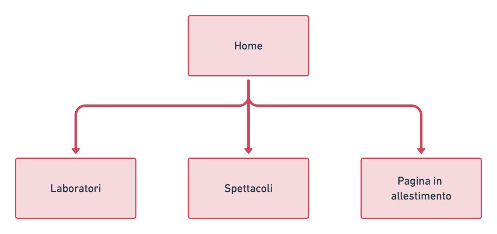
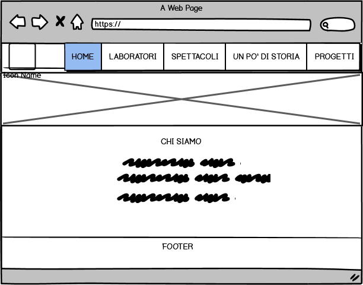
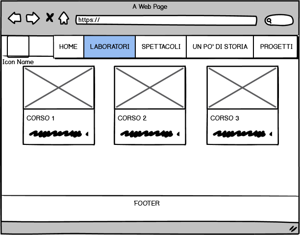
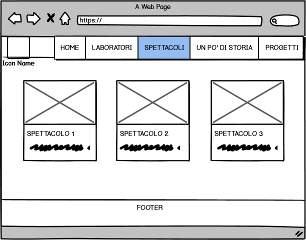
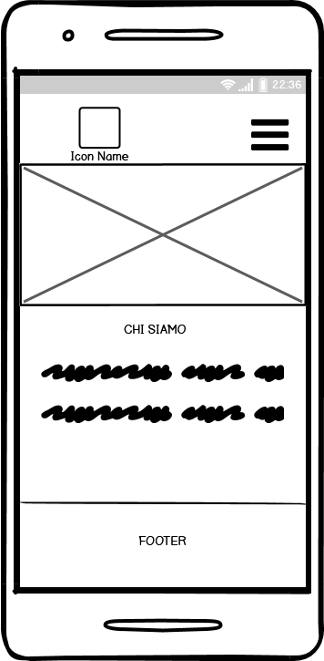
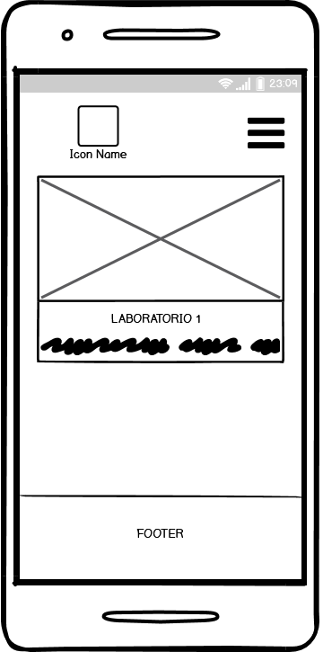
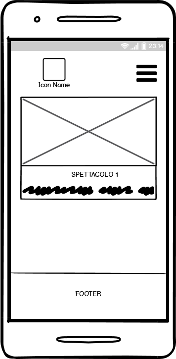

Il progetto nasce per dare un sito web all’associazione culturale Tea(l)tro. L’obiettivo è farla conoscere ai tanti appassionati di teatro della zona e invogliarli a iscriversi ai diversi laboratori proposti o semplicemente a seguire gli spettacoli. La realizzazione del template è avvenuta mediante i linguaggi HTML5, CSS3 e la libreria Bootstrap per le parti più interattive. Per raggiungere un target così vasto il design è semplice, chiaro e intuitivo e per facilitare l’accesso su qualunque dispositivo il sito è responsive.
Obiettivi. Nonostante l'associazione culturale Tea(l)tro sia attiva dal 2005, non ha mai avuto un sito web. La realizzazione di questo ha come obiettivo principale farla conoscere anche al di fuori del comune di Castello d’Argile (in cui ha sede Tea(l)tro) e promuoverne i corsi e le attività. La proposta di Tea(l)tro è essenzialmente di tipo educativo ovvero utilizzare il laboratorio teatrale per predisporre le persone alla comunicazione, avvicinare i ragazzi al palco attraverso progetti scolastici e mostrare l’importanza del teatro nella storia e nella quotidianità. Un “fare teatro” di tipo non autoreferenziale ma che punta all’educazione, all’informazione e alla comunicazione.
Target utente. Il target utente è particolarmente vasto. Studenti, adulti, lavoratori, pensionati, una fascia d’età ampia che ha come collante un unico elemento, la passione per il teatro.
Competitors. Come competitors ho scelto 2 siti web di associazioni culturali simili a Tealtro:
IL TEMPORALE Non si occupa solo di teatro ma anche di musica. Il suo grande pregio è la call to action proposta nella HOME che consiste nella registrazione alla newsletter. Il sito è inoltre piuttosto semplice e intuitivo. Il menù presenta le diverse aree formative gestite dall’associazione che a loro volta contengono sottomenù. Questa gestione risulta abbastanza chiara (e necessaria) nella versione desktop ma crea confusione in quella da cellulare, nonostante il sito sia responsive. La leggibilità è facilitata dalla presenza di una colonna centrale ma forse la dimensione del carattere di soli 14px potrebbe costringere alcuni utenti a dover ricorrere allo zoom. Le scelte grafiche sono discutibili in particolare diversi elementi non sono ben allineati e questo crea discontinuità e poca armonia in chi guarda.
AGITA Il sito risulta subito allegro e piacevole alla vista: a partire dal logo colorato al video introduttivo, le scelte dal punto di vista grafico tra immagini e icone intuitive creano uno stile vincente. L’organizzazione del sito mostra la varietà di attività di cui si occupa l’associazione ma a volte questa “pienezza” risulta un po’ dispersiva e disordinata. Entrando nell’area formativa non è più possibile tornare alla home. Gli stessi elementi sono ripetuti all’interno della stessa pagina. La presenza del menù nel footer ad esempio diventa inutile dal momento che la barra principale è fissa, quindi accessibile in ogni momento. La leggibilità non è sempre ottimale poiché i caratteri sono grigio chiaro su sfondo bianco e il testo occupa lo schermo per intero. La presenza della barra di ricerca è sicuramente utile e necessaria per trovare i contenuti desiderati in mezzo al mare di informazioni riportate.
Architettura del sito. 
Wireframe. Il sito è responsive e presenta due versioni diverse a seconda delle dimensioni dello schermo.
DESKTOP (a partire da 756px)
  SMARTPHONE (fino a 756px)
  Look and Feel. Il layout è semplice e lineare. La scelta dei font “Montserrat” per i titoli e “Lato” per i testi è stata fatta dopo numerose ricerche, per facilitare la leggibilità. Per lo stesso motivo il testo non si espande su tutto lo schermo ma è presente una colonna centrale nella home e una divisione a blocchi per la descrizione di spettacoli e laboratori. Per evitare distrazioni e confusione sono pochi i colori presenti: un grigio chiaro per separare otticamente i blocchi di testo dallo sfondo bianco e il rosso per le voci del menù e il footer. Oltre a richiamare il colore del logo (preesistente alla nascita del sito), in qualche modo il rosso è da sempre strettamente legato al teatro nonché simbolo della passione e dona un tocco di vivacità ed eleganza alle pagine. Icone intuitive (di Fontawesome) accompagnano un testo breve, suddiviso in paragrafi, con parole chiave in grassetto che sintetizzano i concetti per veicolare un messaggio più chiaro possibile. La barra del menù rimane fissa in alto con l'area attiva sottolineata perchè l'utente sappia sempre dove si trova e sia in grado di cambiare pagina in qualunque momento con facilità e immediatezza. Le fotografie dei laboratori e degli spettacoli vogliono mostrare in piccola parte l’armonia che si crea lavorando assieme. Alcuni fotografi di Tea(l)tro sono Paolo Cortesi ed Emanuele Truffa. L’immagine del sipario rosso che apre la home è del sito unsplash.com.
Dopo l’attenta analisi dei competitor, il sito di Tea(l)tro prende spunto da pregi e difetti altrui e cerca di proporsi come semplice e intuitivo ma anche piacevole da visitare dal punto di vista grafico.
Lo scopo principale del sito è la diffusione di conoscenza e passione per il teatro, mostrare la bellezza e l’importanza dei nostri laboratori e allargare così il numero dei partecipanti. In termini di comunicazione web l'obiettivo è raggiungere almeno 50 visite (da utenti unici) e almeno 20 like al post Facebook che promuove il sito.
Il target utente primario comprende tutti gli appassionati di teatro della zona (Castello d'Argile e paesi limitrofi) e si può classificare in due categorie:
La promozione del sito è avvenuta tramite la pubblicazione di un post sul profilo Facebook di Tea(l)tro e attraverso il “passaparola”, condividendo il link su Whatsapp tra amici e conoscenti che vivono tra Castello d’Argile e paesi limitrofi.
L’obiettivo fissato è stato raggiunto. Google Analytics ha registrato più di 180 visite (almeno la metà nella zona target) e il post Facebook ha ottenuto 42 like e 6 condivisioni. Non ci resta che aspettare nuove iscrizioni per i prossimi seminari!